64 environments × 3000 steps, seed 42. Left: training-matched no DR. Right: full-DR stress test.
Orange steering is the held target entering explicit PD; orange rear is submitted motor torque. Green rear is solver joint-axis effort, not isolated motor-only torque. No smoothing or time shifting.
Methods/report · Numerical summary
| Metric | No DR | Full DR |
|---|---|---|
| Completed episodes | 128 | 2092 |
| Mean episode (s) | 30.0 | 1.4810229445506693 |
| Timeout fraction | 1.0 | 0.025334608030592735 |
0–60 s · red lines: initial spawn and auto-resets (including boundary resets) · independently fitted linear axes, all extrema retained · no smoothing/time shift
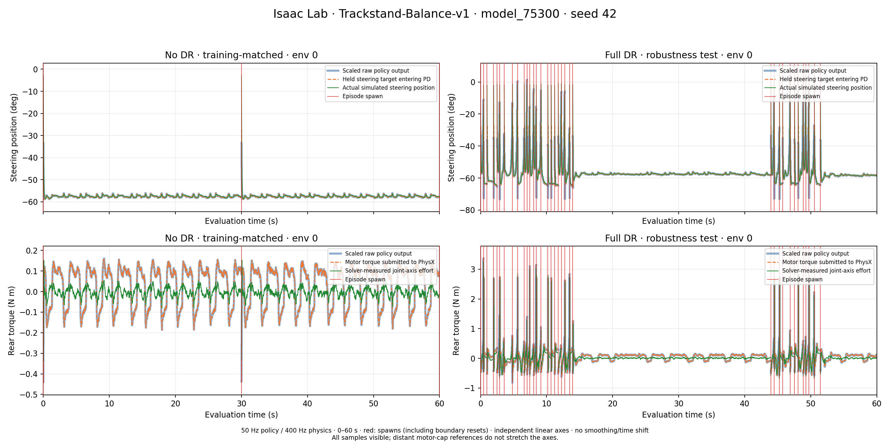
Same samples and timestamps. Red lines mark spawns. Nominal axis bounds use episode age ≥0.5 s; startup extrema extend outside this view. DR retains its full range. Independent vertical axes.
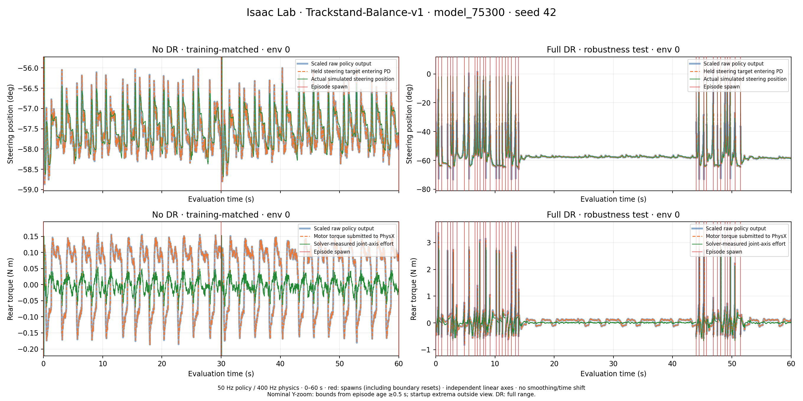
0–0.6 s · resets break lines · no smoothing/time shift; linear axes
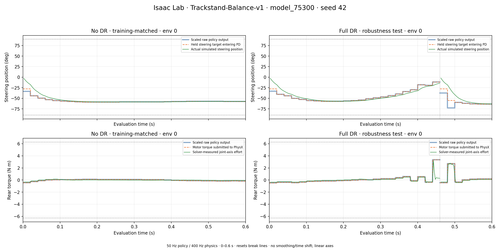
0.5–5 s · resets break lines · no smoothing/time shift; linear axes
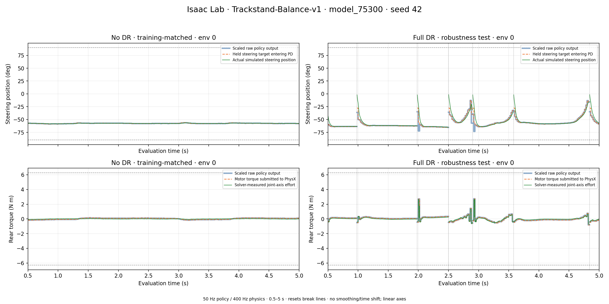
0–0.6 s · resets break lines · no smoothing/time shift; linear axes
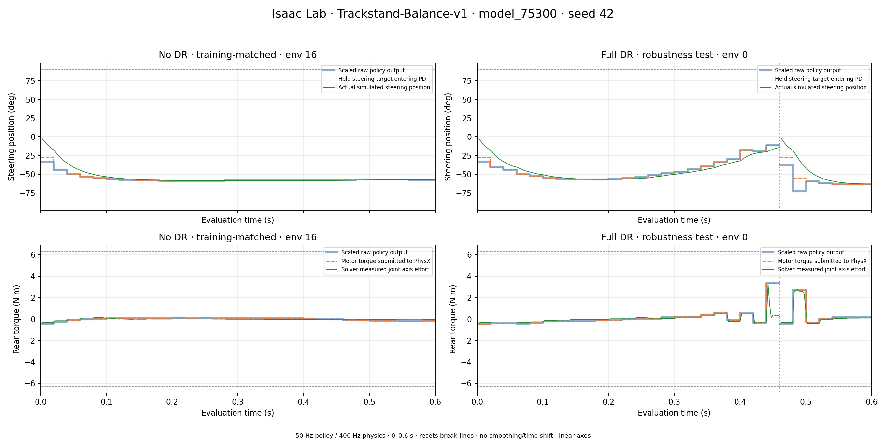
env 0 in both modes · no connections across resets
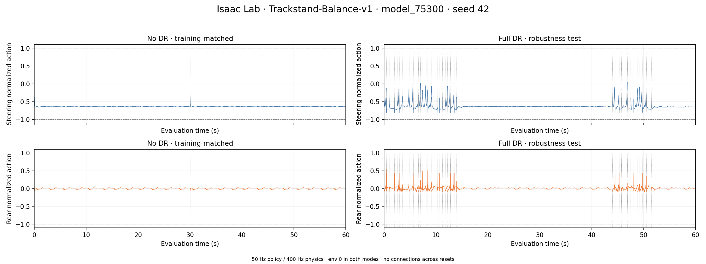
env 0 in both modes · no connections across resets
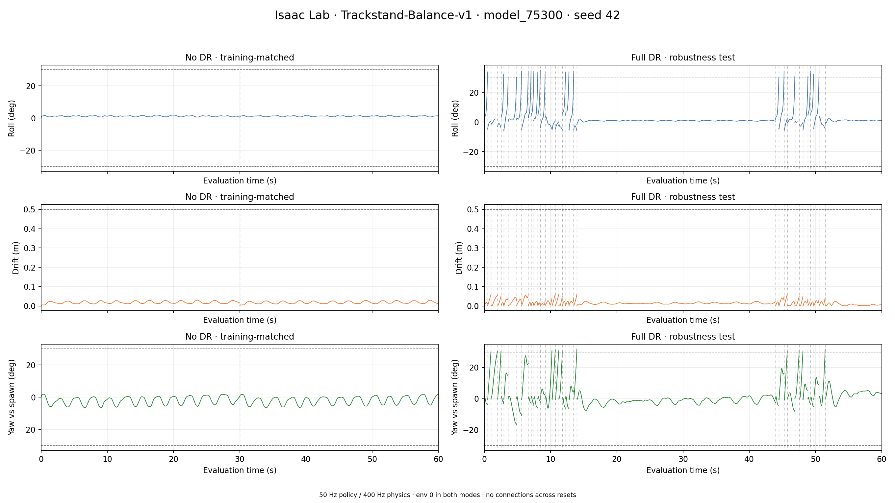
all 64 envs · demand 50 Hz; torque/speed 400 Hz · dashed: configured limits
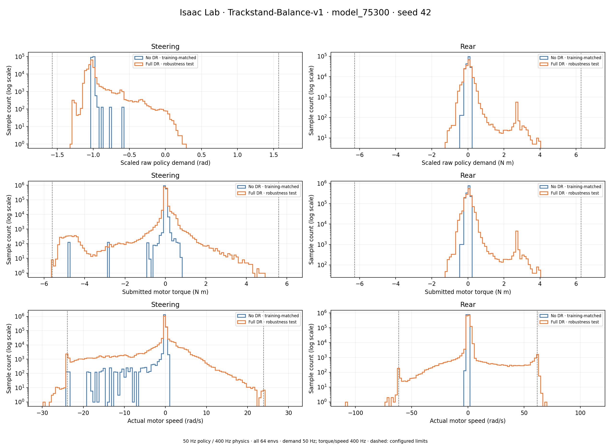
env 0 · actual noisy 11-channel policy input, captured at inference
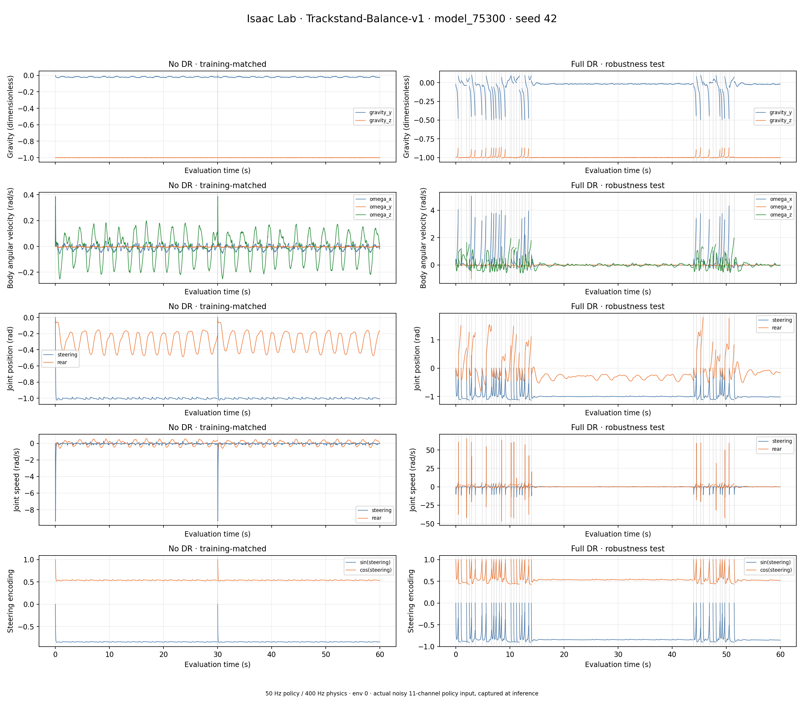
env 0 · first 5 s · passive joint losses are separate from controller Kd
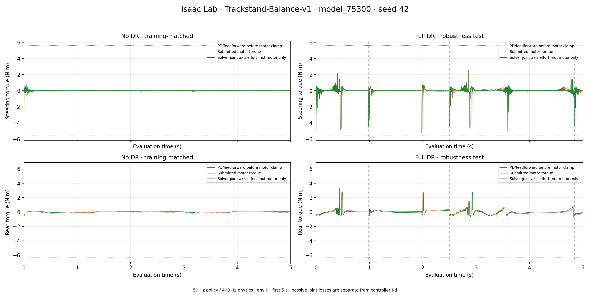
10 bins × 3 s · unfinished episodes at capture end are excluded
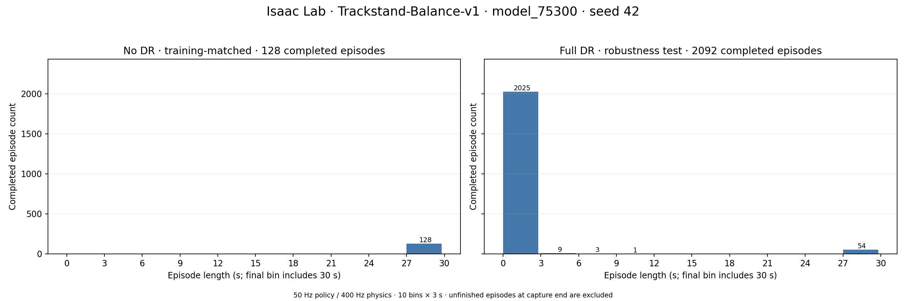